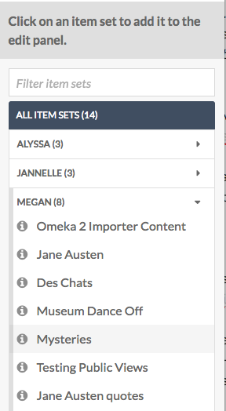

The Resources tab of the site context menu allows you to set what Items and Item Sets available on your site's browse pages. The Item Pool also sets which items are available in the sidebar when building pages.
Resources has two tabs across the top of the window: Item Pool and Item Sets.
Item Pool is where you can set the items available for selection and browse in your site.
Item Sets is where you select the sets which will show up on the Browse Item Sets page, should you choose to include it
Note The two tabs operate independently from each other. The selections made on one will have no effect on the other. The Item Pool tab limits which items are available, while The Item Set tab limits which sets are visible for public browsing.
Item Pool
The Item Pool determines what automatically appears in the resource selection options on the pages of your Omeka S site. It also limits the resources which appear on a browse page on your site.
Note that the search options for the Item Pool work together to build an overall search. If you had the search in the image above, looking for items where "Creator" contains the word "Doyle" and you added a criteria where Class=Text, it would only add items to your pool which matched both statements.
The settings in the Item Pool tab allow you to set the parameters for the pool. You can use one or more of the search options:
Search by value: search for a term or phrase which you enter
- The first selector allows you to specify a property to search.
- The second selector allows you to set the relationship the property has with the value. The options are:
- is exactly,
- is not exactly,
- contains,
- does not contain,
- is resource with ID,
- is not resource with ID,
- has any value (there is something in the property), and
- has no values.
- Finally, there is a text field for you to enter the value you want the property to have.
To find a resource ID, go to the resource and look at the url in your browser's address bar. The numbers at the end of the url are the resource ID.
Search by Class: select one or more classes from the dropdown menu - the search will only return items with this class.
Search by template: select from existing resource templates and the search will only return items using this resource template or templates.
Search by item set: select from a dropdown of item sites.
If you have already set terms for an item pool, the Item Pool page will display a message above the table of search options, with the number of items in the current site pool (see the image below). The number functions as a link which takes you to an admin-side browse of all the items in the site's item pool. Note that clicking the link takes you outside of the Sites admin
The image below shows how those items are displayed; the name of the site is displayed just under the header for items. Note that we are back in the Items section of the Omeka S install admin, rather than the Site admin.
In site pool: select from a dropdown menu of all the sites on the Omeka S installation, sorted by user-owner. This dropdown lists all sites on the installation by owner. You do not need to select the current site - this dropdown is only there so you can build searches using other sites' pools.
Item Sets
On this tab you can select which Item Sets will display on a Browse Item Sets page when added to the navigation.
The table in the Item Sets tab shows any item sets already added, with their title and owner's email address.
To add an item set, select it in the right hand sidebar. You can find the desired item set by either:
- typing the name of the item set in the search bar and then clicking on the correct item set, or
- click on the name of the item set owner, then clicking on the name of the item set.

Remove an item set by clicking the red delete button (trash can icon). You can change the order of the item sets by dragging and dropping using the three-bar icon on the left end of the row.
The following image shows a browse item sets public view using the default theme: